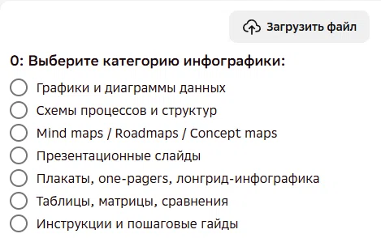
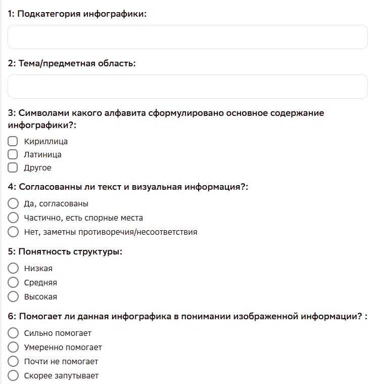
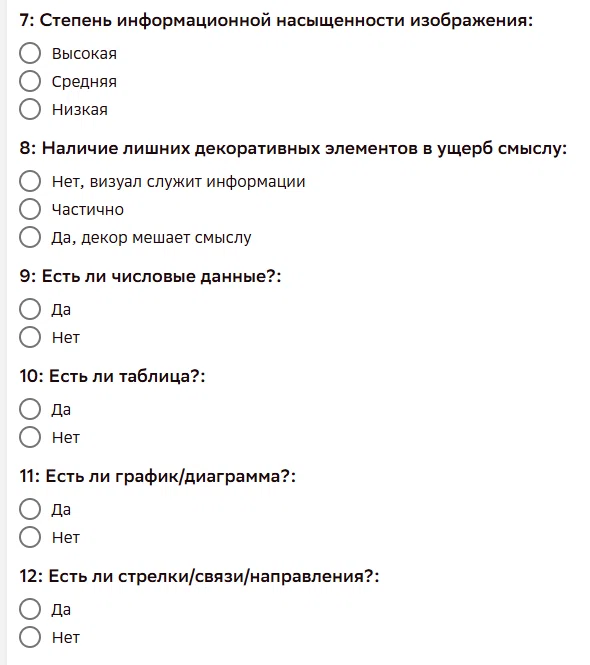
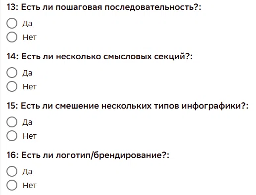

Обзор проекта
Заявка_1063_image_infographics. Как попасть на проект, что собираем и как выглядит разметка.
📄 Основное ТЗ Полный регламент в Google Docs → Откроется в новой вкладке. Это первоисточник — при расхождениях ориентируйтесь на него.1. О проекте
Заявка_1063_image_infographics — сбор изображений инфографики для обучения моделей. Мы ищем визуальные материалы, где информация подаётся через структурированное сочетание текста, схем, графиков, изображений и иконок.
Инфографика — это не просто фото или сплошной текст, а визуальная система, где данные организованы в блоки и связаны между собой. Из таких изображений модели учатся распознавать типы визуализаций, извлекать числа и связи, различать языки и алфавиты.
Цель проекта — собрать качественные, хорошо структурированные изображения инфографики по 9 категориям (диаграммы, схемы, mind maps, слайды, плакаты, таблицы, инструкции, карты, чек-листы) с учётом языка пула: кириллица, латиница или другое.
Работа идёт через платформу Tagme. Доступ к личному кабинету выдаёт руководитель группы Data Light.
🏷️ Название заявки в Tagme:
Заявка_1063_Тариф_2_Kandinsky_SFT_collection_image_infographics_v1_ДатаЛайт
🖥️ Платформа: вся работа — включая сам экзамен и выполнение заданий — идёт в личном кабинете на платформе Tagme. Доступ к личному кабинету выдаёт руководитель группы Data Light.
2. Как попасть на проект
| Шаг | Что происходит |
|---|---|
| 1 |
Экзамен 2 попытки по 31 заданию. Проходной балл — 85%. Если на первой попытке не будет набрано нужное количество баллов, начнётся вторая попытка — там также 31 задание. Но это не значит, что нужно делать их все: как только наберётся нужное количество баллов, экзамен закончится и автоматически появится доступ к боевому пулу. |
| 2 |
Пул Каждый пул распределяется на всех асессоров. |
| 3 |
Старт Проект добавлен, навык назначен. Можно приступать к сбору и разметке инфографики. |
⚠ Перед началом разметки внимательно смотрите на название пула
Важно, чтобы целевой язык (тот, который указан в названии пула — в начале инструкции) присутствовал на изображении — допускается присутствие других языков, но целевой должен быть обязательно.
3. Как выглядит интерфейс разметки
На платформе вы размечаете одно изображение за раз: загружаете файл и отвечаете на 17 вопросов (от 0 до 16). Ниже — как выглядит форма и что означают вопросы.




Список вопросов
- Выберите категорию инфографики. 9 категорий: Графики и диаграммы; Схемы процессов; Mind maps / Roadmaps / Concept maps; Презентационные слайды; Плакаты, one-pagers, лонгрид-инфографика; Таблицы, матрицы, сравнения; Инструкции и пошаговые гайды; Навигационные схемы; Чек-листы с визуальной структурой.
- Подкатегория инфографики. Текстовое поле. Например, для категории «Графики и диаграммы» — «Столбчатая диаграмма», «Линейная», «Круговая», «Точечная», «Таблица как график», «Дашборд».
- Тема / предметная область. Текстовое поле. Не то, что на картинке, а область знаний: математика, бизнес, медицина, космос.
- Символами какого алфавита сформулировано основное содержание инфографики? Кириллица / Латиница / Другое.
- Согласованы ли текст и визуальная информация? Да / Частично / Нет.
- Понятность структуры. Низкая / Средняя / Высокая.
- Помогает ли данная инфографика в понимании изображенной информации? Сильно помогает / Умеренно / Почти не помогает / Скорее запутывает.
- Степень информационной насыщенности изображения. Высокая / Средняя / Низкая.
- Наличие лишних декоративных элементов в ущерб смыслу. Нет / Частично / Да, декор мешает.
- Есть ли числовые данные? Да / Нет.
- Есть ли таблица? Да / Нет.
- Есть ли график / диаграмма? Да / Нет.
- Есть ли стрелки / связи / направления? Да / Нет.
- Есть ли пошаговая последовательность? Да / Нет.
- Есть ли несколько смысловых секций? Да / Нет.
- Есть ли смешение нескольких типов инфографики? Да / Нет.
- Есть ли логотип / брендирование? Да / Нет.
Подробное описание каждого вопроса и правил разметки — в разделе 6 «Пошаговая инструкция по сбору и разметке».